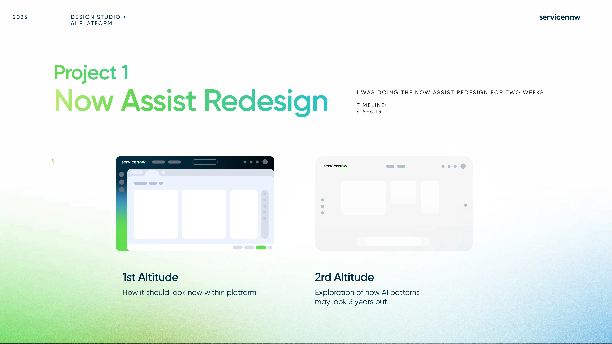
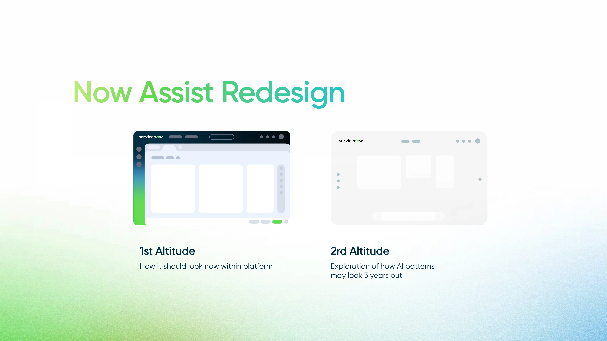
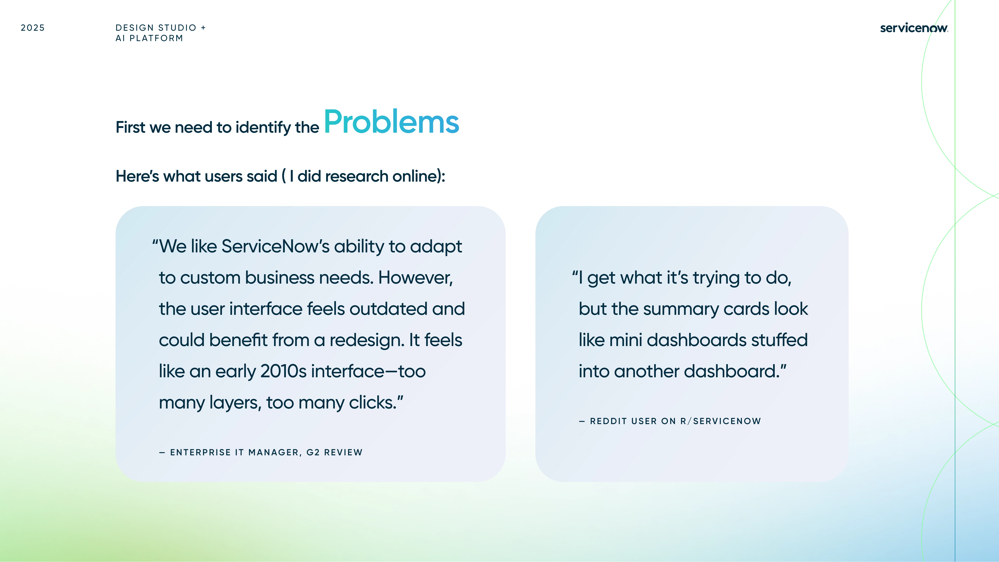
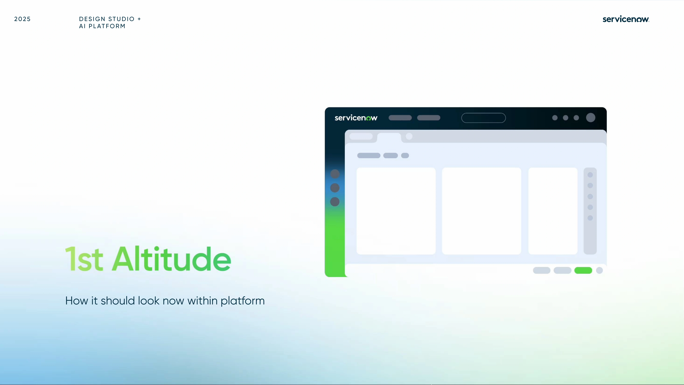
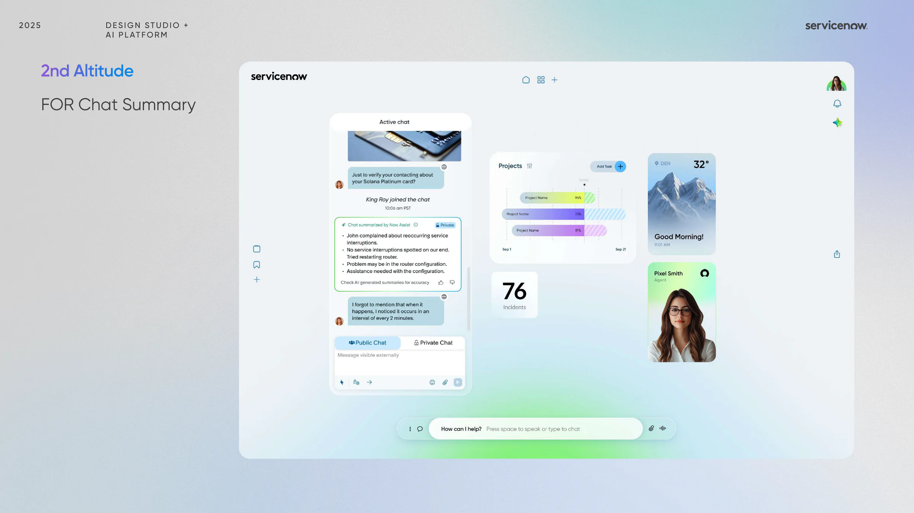

Users needed clearer signals.
The experience felt layered and hard to scan. Clearer states could build trust.
Project / 02
A two-week ServiceNow internship project focused on making Now Assist feel clearer, calmer, and more trustworthy inside enterprise product workflows.

This project started by looking closely at how the current Now Assist panel felt in use and how top AI products were shaping user expectations around clarity, motion, entry points, and trust.
I translated that research into two altitude directions: a near-term redesign for how the assistant should feel inside the platform today, and a future-facing exploration imagining how these AI patterns could evolve over the next three years.
Discuss this project ↗Context
We focused on clarity, calm, and trust at every state.
The experience felt layered and hard to scan. Clearer states could build trust.
Consistency, clear entry points, helpful motion, a neutral tone, and transparency.
I redesigned summaries, feedback, errors, caution states, and AI entry points.





Design Directions
The first direction focused on practical in-product refinement. The second opened a broader conversation about future behavior, patterns, and system trust inside enterprise AI workflows.
This track focused on practical in-product improvements: clearer hierarchy, less visual clutter, more legible summaries, and cleaner moments of feedback around AI-generated content.
I also pushed beyond the current UI to imagine future patterns for summaries and controls, balancing system trust, collaboration, and more adaptive behavior without making the assistant feel louder.
The redesign touched chat summary, task summary, feedback capture, error handling, caution states, and entry-point behavior so the entire assistant experience could feel more cohesive.




Outcome
What became strongest in the work was the consistency between principles and interface decisions: every choice aimed to make enterprise AI feel clearer without becoming colder or heavier.
Summaries and controls were reorganized so users could parse what AI generated, what it suggested, and what needed review much faster.
Loading, caution, error, and feedback moments were treated as core design surfaces rather than edge cases, which made the assistant feel more accountable.
This sprint reinforced that the most useful AI redesigns often come from reducing ambiguity and noise, not from adding more visible AI signals.